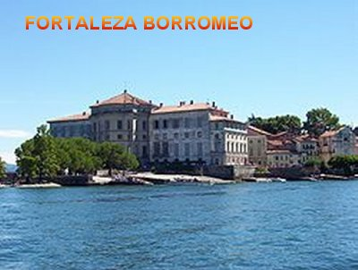
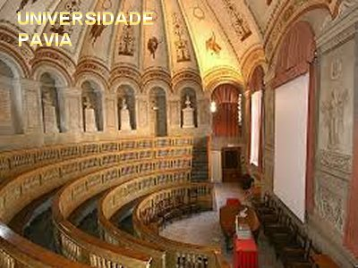
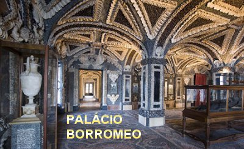
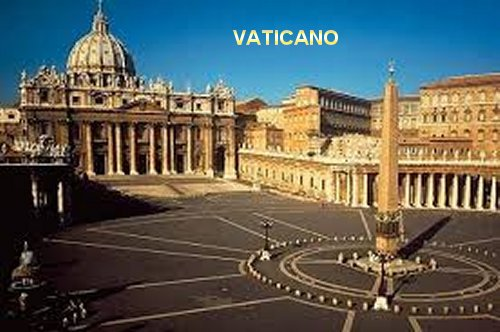
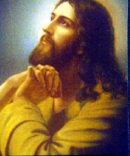

HISTÓRIA ADMIRÁVEL
NASCIMENTO E FAMÍLIA 
Carlos nasceu em Arona, perto de Milão na Itália, no dia 2 de Outubro de 1538, no Castelo da família, no Lago Maggiore, sendo o segundo filho de um casal nobre e rico. Seu pai era o Conde Gilberto Borromeo, conhecido por sua profunda religiosidade e grande generosidade com os pobres; e sua mãe a senhora Margarida Médici, irmã do Papa Pio IV, que era muito religiosa e também exercia com prazer e dedicação, a caridade para com todos aqueles que mais necessitavam. Infelizmente ela morreu quando Carlos tinha apenas nove anos de idade. Mas, sua lembrança e as obras do pai, influenciaram de modo fundamental na educação e no proceder do filho.
O menino manifestou desde criança forte inclinação para a vida religiosa, pela piedade e o temor a DEUS, da mesma maneira como os seus pais procediam. Era seu prazer construir pequenos altares e diante deles, na presença dos irmãos (Frederico o irmão mais velho e uma menina, mais nova) e os companheiros da sua idade, procurava imitar as funções sacerdotais que observava na Igreja, como os Padres faziam durante a Santa Missa. Era mero brinquedo infantil, mas o seu amor à oração e o seu distanciamento dos divertimentos profanos, eram os sinais mais positivos da vocação sacerdotal que envolvia o seu coração. Aos 8 anos recebeu a primeira tonsura (corte de cabelo arredondado em cima e na base, no primeiro grau de clericato, como algumas Congregações usavam).
MENINO COMENDADOR
Em 1550 com doze anos, recebeu o hábito. Pela renúncia do seu tio Julio César Borromeo, entrou no usufruto da Abadia de São Graciano e São Felino, que era uma Abadia utilizada pelos Beneditinos em Arona. Com este acontecimento formou-se o laço, que prendeu o jovem à participação da vida pública da Igreja. Mas a administração dos emolumentos que lhe proporcionavam um grande benefício financeiro, Carlos, apesar da sua pouca idade, os seus mais puros sentimentos cristãos já sabia considerar aquele elevado valor como coisa sagrada. Dizia ele:“O Bem eclesiástico é propriedade de CRISTO, e pela Vontade do SENHOR, é bem dos pobres; a eles caberá o usufruto do bem”. Foi esta a regra que a fé lhe ensinou, e que as tradições da família lhe confirmaram. Não consentia que bens da Abadia fossem aplicados em alguma necessidade de família.
Assim que recebeu sua investidura no cargo, correu para contar a notícia ao pai e para lhe confirmar que decididamente usaria aquele dinheiro para ajudar os pobres. Sem dúvida, foi uma reação admirável para uma criança com apenas doze anos de idade.
INGRESSOU NA UNIVERSIDADE

Na Universidade teve a oportunidade de ouvir muitas vezes, as preleções do célebre canonista Padre Francisco Alciati, que ampliou e fixou em bases firmes, os seus conhecimentos cristãos. E na condição de estudante, logo revelou os seus inúmeros e preciosos talentos: mostrando grande inteligência, um caráter tenaz e reflexivo, buscando e exercitando sempre o essencial, não se perdendo em coisas banais e nem em experiências supérfluas, que geralmente ocorre nessa idade em muitas pessoas. Na Universidade se laureou em Direito Civil e Canônico.
SEU PAI FALECEU 
A notícia da morte de seu pai em 1560, o chamou para casa, e com muitas lágrimas fechou o mausoléu da família com o seu pai e sua mãe. Nesta época, Carlos com quase 22 anos de idade, apesar de entristecido com a realidade, manteve um modo de agir definido e coerente, e revelava um espírito vivo deixando transparecer a tendência de ser aquele homem predestinado a grandes coisas. Definitivamente não quis se casar e logo se distanciou de todas as influências e sugestões familiares e inclusive de um velho empregado da família, que se esforçava em querer mudar o seu pensamento. Carlos, depois de organizar os serviços e orientações gerais no palácio da família, como sua obrigação, assumiu também o propósito de reconduzir os monges da Abadia Beneditina em Arona, ao fiel cumprimento dos deveres religiosos, considerando que havia muitas críticas quanto ao comportamento deles. Assim, por meios hábeis e inteligentes atitudes, com bondade e energia, conseguiu o seu objetivo.
NO VATICANO
Giovanni Ângelo de Médici, tio materno de Carlos, foi eleito Sumo Pontífice sob o nome de Papa Pio IV, e assumiu o governo da Igreja. O novo Papa mandou chamar o sobrinho Carlos e lhe deu o posto de Cardeal no ano 1560, e também nomeou o sobrinho mais velho Frederico, irmão de Carlos, para o cargo de Capitão Geral da Igreja.
Sua família queria festejar os importantes acontecimentos, todavia o jovem Carlos pediu que apenas celebrassem em Arona, uma Santa Missa ao DIVINO ESPÍRITO SANTO, suplicando bênçãos e inspiração, e agradecendo a intervenção Divina. De cargo em cargo, Carlos chegou ao posto mais elevado que um Pontífice pode conferir: foi nomeado Secretário de Estado (e foi o primeiro Secretário de Estado da história do Vaticano).
O PODEROSO CARDEAL

O Papa tinha grande afeto e especial carinho pelo seu sobrinho Carlos, em face do seu brilhante e eficiente trabalho. Por essa razão, além de lhe confiar os principais serviços dentro da administração eclesiástica, Pio IV também nomeou Carlos para administrar a Diocese de Milão, mas com a obrigação de permanecer em Roma. E por outro lado, em todas as nomeações, trabalhos e administrações que o Papa lhe confiava, o sobrinho recebia os benefícios econômicos de cada cargo. Sendo um homem inteligente e de grande cultura, decidiu empregar bem aqueles recursos financeiros. Fundou uma Academia de natureza humanista-literária, e convidou os seus amigos para participar. Tudo funcionava como um verdadeiro cenáculo de cultura religiosa, no qual implantou estudos e debates, para a maior difusão e conhecimento do cristianismo. Aqueles encontros eram participados com muito fervor e interesse por todos. Também comprou uma casa, vestiu-se bem e mobiliou os seus aposentos com magnificência, para sustentar a sua qualidade de Príncipe da linha familiar, de Cardeal da Igreja e de sobrinho do Papa. Mas, na realidade, tudo aquilo que realizava não era por vaidade, mas porque considerava apropriado para a posição social que ocupava e pela fama e decoro da família dos seus pais, que eram muito ricos e tinham muitos bens.
EVENTO DECISIVO

Todavia em 1562, a morte repentina do seu irmão Federico, sem deixar filhos, mudou radicalmente a sua vida. Todos esperavam que Carlos, ainda não tendo sido ordenado sacerdote e sendo o único herdeiro do nome da família, deixasse a carreira eclesiástica e se casasse para perpetuar o nome familiar. Todavia ele não pensava assim, interpretou o acontecimento como um sinal Divino, que abria os seus olhos para reformar a sua vida, tornando-a mais simples, modesta e perfeita, condizente com a realidade e o sentido evangélico da sua obra. Então ele acabou com as recepções e os encontros com os amigos, embora fosse um entretenimento moralmente lícito, pois se tratava de um animado ambiente de cultura religiosa. Reduziu ao mínimo o seu padrão de vida, e intensificou ao máximo: suas renúncias, penitências e jejuns. Seus bens que eram muitos, contou com a colaboração de parentes e amigos de confiança para ir vendendo e com seus projetos, empregar os valores na construção de hospitais, de albergues para pobres, casas de formação para sacerdotes e religiosos, além de intensa ajuda aos mais necessitados. Também retomou a sua própria formação teológica e pastoral, elaborando variados esquemas de trabalho e pesquisas de comportamento humano em profundidade, buscando o bem-estar espiritual e maiores benefícios para as almas. Pois na verdade ele era Arcebispo de uma Diocese, apesar de não estar praticando diretamente em Milão e nem ter tomado posse da mesma. Por isso, decidiu acelerar com o consentimento do Papa, a sua ordenação sacerdotal com plena consagração a DEUS, de modo irrevogável.
O Papa ficou perplexo com a transformação do seu sobrinho num sentido ascético! Consigo mesmo ele pensava: “Como aceitar aquela mudança no seu querido parente que tanto o ajudava e que às vezes até o chamava de meu olho direito"? Balançou a cabeça: aquilo tudo lhe parecia muito exagerado! Chegou inclusive a repreendê-lo acusando-o de excessivo zelo religioso! E por tudo isso, o Papa estava triste e não se conformava, e o repreendeu desencorajando “aquele excesso”. Houve tristezas e buscas de soluções. Entretanto, poucos dias passaram e o Sumo Pontífice sem mais, e sem avisá-lo, decidiu observar o sobrinho. Primeiro ocultamente com muita discrição, mas depois passou a examiná-lo visualmente à distância, e por fim, passou a admirar a mudança notável ocorrida no seu querido Carlos. O Papa tão impressionado ficou com a constância na transformação do jovem, que finalmente permitiu que ele seguisse aquele caminho ascético. E também mudou completamente o seu sentimento: passou a admirar e gostar de apreciar a religiosidade do Carlos!... E tanto observou e se entusiasmou que na continuidade dos dias, ele mesmo, decidiu imitá-lo, primeiro de longe e depois cheio de prazer e com fervorosa alegria, junto e na companhia do seu querido sobrinho.